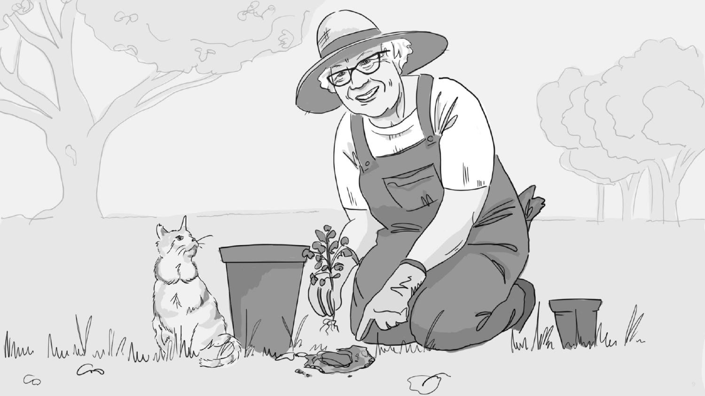
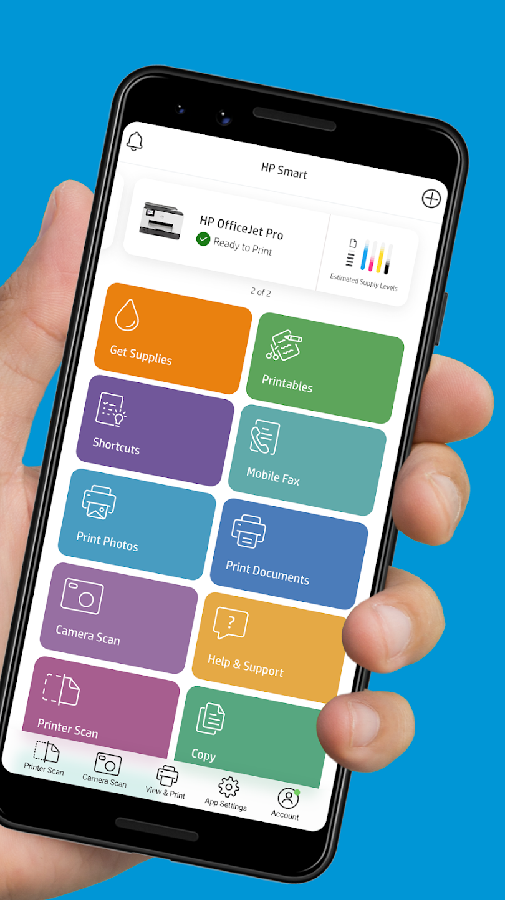

An award-winning AI robot, and a feature 65 million people used
Five years, two very different chapters: leading marketing for an AI-powered telepresence robotics initiative aimed at senior healthcare, then scaling the HP Smart app from 6 million to 65 million monthly active users — including a feature he wrote the user stories for and directed the launch video on.
An AI robot for senior healthcare — and the business case that got it funded
Bradley was the marketing lead on an award-winning initiative pairing computer-vision AI with telepresence robotics for senior healthcare — centered on preventing hospital readmissions and helping isolated seniors stay connected to family and care teams. With a small team, he developed the business plan, business model, and go-to-market strategy, taking it through multiple approval checkpoints inside HP. Cooper+Designit, an outside design consultancy, was later brought on to validate and refine the plan under his direction. The work earned HP's Bill and Dave Award.
Built the TAM/SAM/SOM case for chronic-disease management and post-hospital recovery, modeling adoption and revenue five years out.
Framed around a real clinical problem: preventing hospital readmissions by keeping seniors monitored and connected to care teams at home.
Mapped the path through FDA device classification and Medicare coverage — the barriers that keep most healthtech ideas from ever shipping.
Assessed the land grab already underway — Suitable Technologies, InTouch Health, Amazon, Apple — and where HP's actual advantage was.
Ran in-depth ethnographic research with seniors and families, then translated it into journey maps and an in-home prototype study.

"'Aging in place' feels too static. I prefer to think of it as 'thriving in motion.'" That line from a research participant anchored the whole pitch — the device had to support independence, not just monitor decline.

Lowering the barrier to reach a provider — a face on a screen, on a robot that comes to you, instead of a phone tree or a trip to the clinic.

Medication reminders, recovery tracking, and data shared with care teams — the pieces aimed directly at preventing the readmissions that chronic-disease and post-surgery patients are most at risk for.
Scaling HP Smart to 65 million users
Bradley led go-to-market, analytics, and the Create segment on the HP Smart app, contributing to its growth from 6 million to 65 million monthly active users.
HP is a massive, deeply connected company, and the Smart app sat at the center of it — one app tying together hardware, firmware, and software across dozens of printer lines, platforms, and devices worldwide. Bradley worked with 100+ stakeholders across departments and geographies, and fire drills were the norm: some document or ask that reframed a piece of the technology or marketing roadmap, on short notice, constantly. At that scale, the planned top priority regularly got overtaken by an emergency one. The app stayed consistently effective, growing, and highly rated only because of the flexibility, talent, and professionalism of that team.

HP Smart is the connective tissue for HP's printer ecosystem — setup, scanning, printing, supplies, and photo tools, all in one app. Bradley's team owned the growth and product marketing behind it as it scaled more than tenfold.
Turning a data mess into monthly reports the president read
For a year, Bradley built the analytics program for product marketing from scratch, in three moves. He mapped the ecosystem of data the org was already collecting, drilling into what each metric actually meant and which business questions it could answer. Then he went across the 100+ stakeholders hunting for the most important questions the app wasn't instrumented to answer, writing the requirements to close those gaps and working with teams to prioritize the build. Finally, he communicated it — teaching analytics fundamentals across the organization, then producing monthly reports that went all the way up to the company president, where accuracy and credibility weren't optional.
Inventoried what was already being collected and defined what each metric actually meant.
Found the business questions the app couldn't answer yet, and wrote the requirements to fix that.
Taught analytics literacy org-wide, then delivered monthly reporting up to the president.
The toggle that fixed a feature nobody understood
Memories paired a custom photo-book creation tool with HP's internal AI libraries for identifying good photos, and shipped to the full HP Smart user base. When usage lagged, Bradley looked at the data and saw the problem wasn't the creative — a different model, hair, background, wouldn't have fixed it. People simply didn't understand what the feature did. So he built an ad around a single idea: an Apple-style toggle switch, shown in the off position, asking "Do you want to turn your creativity on?" — paired with an introductory video that explained the feature and made the case for using it. Click-through rates jumped.
4x6" Duplex printing, for holiday cards
Customer insights from ethnographic and market research anchored the business plan and GTM strategy Bradley developed for 4x6" Duplex printing. He wrote the user stories that shaped the feature and led product marketing, including direction of the launch video below.